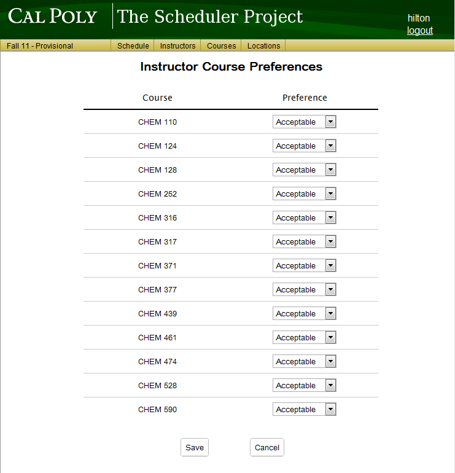
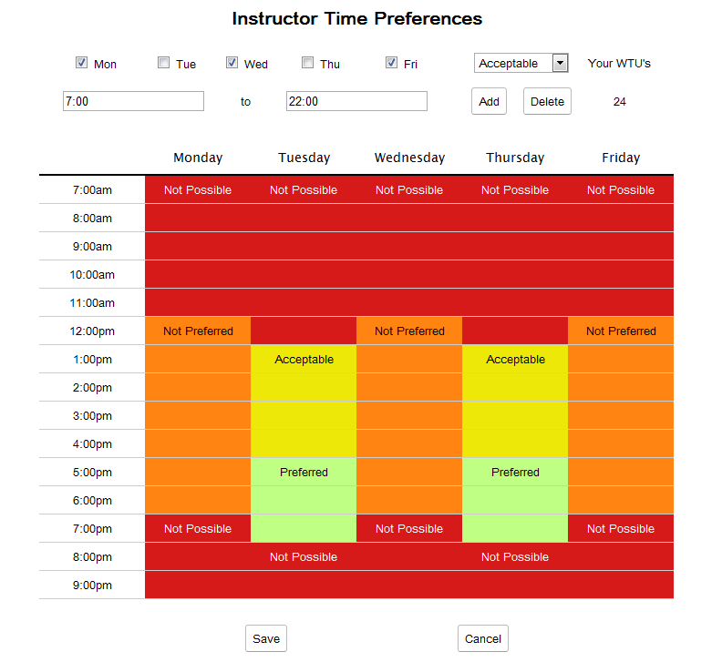
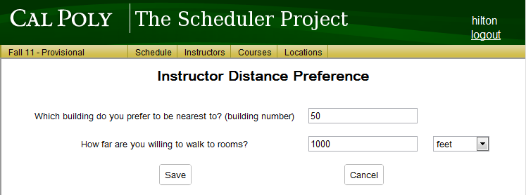

Once an administrator clicks on any of the instructor preference buttons from an edit instructor view, they are greeted with the corresponding preference view. The three options for instructor preferences are Courses, Times, and Distance.
The view that is shown in Figure 2.5.1.1 is reached by clicking on an instructor's Courses button from the edit instructor view.

Figure 2.5.1.1: Instructor course preferences
This screen will list all courses for the department. Beside each course is a drop down menu with preference options for that specific course. The four options are:
Acceptable is the default choice for all courses.
When the preferences have been set, the user must select the Save button to save the changes. Otherwise, select the Cancel button, which will ignore all changes made to the preferences.
The view that is shown in Figure 2.5.2.1 is reached by clicking on an instructor's Times button from the edit instructor view.

Figure 2.5.2.1: Instructor time preferences
This screen will show a calendar week view. It allows the user to set an instructor's time preferences. Times are added using the settings at the top.
At the beginning, the week view will be blank, indicating an acceptable preference for all possible instruction hours. The two text entry boxes allow the user to enter the beginning and ending time of the block they wish to add. The Mon, Tue, Wed, Thu, and Fri checkboxes specify which days of the week for which the block will be added. To the right, above the Add and Delete buttons is a drop down menu that allows you to choose a preference level from the choices listed below:
Once the user is done making the available adjustments to add a block of time, they can then click on the Add button. Blocks of time added will appear on the week view. For deletion of blocks of time, the user may click on the block and then click on the Delete button.
When the preferences have been set, the user must select the Save button to save the changes. Otherwise, select the Cancel button, which will ignore all changes made to the preferences.
The view that is shown in Figure 2.5.3.1 is reached by clicking on an instructor's Distance button from the edit instructor view.

Figure 2.5.3.1: Instructor distance preference
There are three user input fields on this view. The first input is specifying the preferred center point on the map of the campus for which to apply the distance value that was previously given. This is done by specifying the building number that the instructor wishes for their courses to be nearest to.
The second input is the numerical value for maximum preferred distance.
The third is a drop down menu for specifying the distance unit for the value given in the first input. Drop down choices are feet, yards, meters, miles, and kilometers.
However, if the first input is left blank, then the distance value is used to specify how far apart back-to-back classes can be. For example, say the instructor is willing to walk up to 500 feet. If the instructor has three classes (call them A, B, and C, in that order) to teach in three different classrooms, with no break in between, it is possible that the distance between A-B and B-C is 500 feet each and A-C is 1000 feet.
When the preferences have been set, the user must select the Save button to save the changes. Otherwise, select the Cancel button, which will ignore all changes made to the preferences.